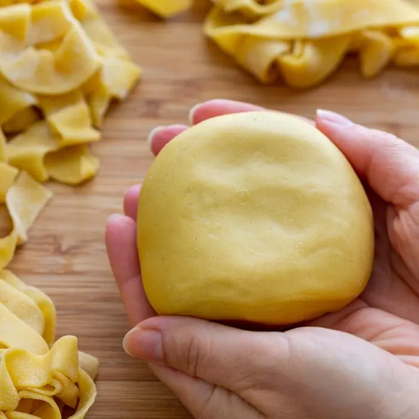

Fresh Pasta Dough
- Makes1 lbs
- Ingredients5
- Steps2

Ingredients
- 4 cups all purpose flour
- 4 large eggs
- 9 large egg yolks
- 1 tablespoon olive oil, plus more for tossing
- Kosher salt
Directions
- Pile the flour on a clean, dry surface and make a well in the center, like a volcano. Crack the eggs and egg yolks into the well. Add the olive oil and a pinch of salt. Using a fork, slowly stir the eggs to break up the yolks, scraping gently along the sides and pulling flour into the well. Continue stirring until most of the flour has been incorporated, and then use your hands to knead the mixture into a smooth dough. If the dough is dry and flaky and you can't mix in all the flour, add warm water, 1 tablespoon at a time, until the dough feels elastic. Cover with plastic wrap or a clean kitchen towel and set aside to rest for at least 20 minutes and up to 1 hour.
- Roll and cut the pasta according to the recipe or your desired shape. Boil the fresh pasta in salted water, toss with sauce, and serve!
Recipe credit: MasterChef Junior Cookbook by Christina Tosi